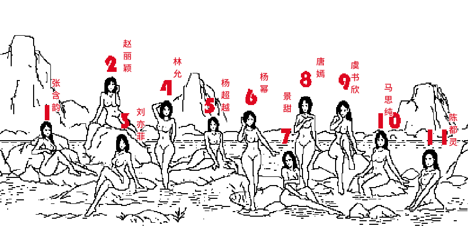
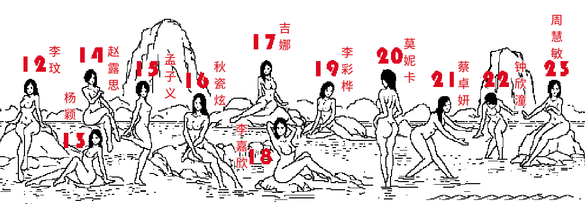
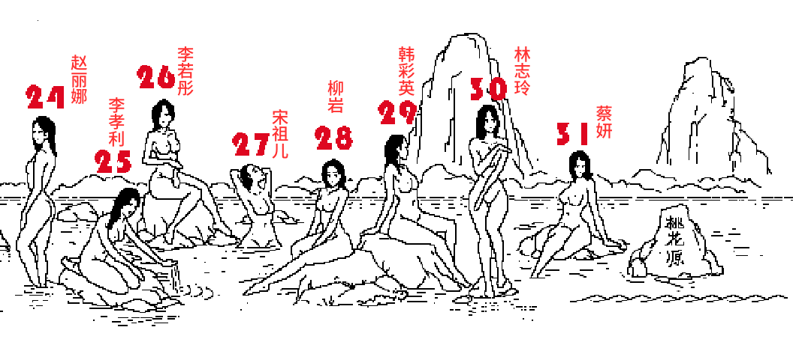

3.桃花源回忆

1、石前 韵涵
2、岩上 丽颖
3、石下 左垂峰
4、水上 挠后立：
5、平坡超越
6、小石 耳展立
7、沿边 搁左右中山
8、人后 右肩立
9、小岩 左脸斜川
10、岩边 摸左膝右人 医师摸左膝右成人
11、坐水 左夹臂

12、前岩 正后合垂 姨儿正后 合垂
13、岩下 左后撑山 艺珊朝左 后撑山
14、后岩 右臂右个 医嗣 右臂有个
15、向右脚板立 义乌友 嚼板栗
16、向左垂叉 右斜水 艺柳向左垂插右写水
17、远上 向右身如人 仪器向右 身如人
18、近石 向右抱头曲从 尾巴向右抱头屈从
19、中石 向左身如止 溢酒向左身如止
20、前水 向左曲臂背立 二世向左屈臂背立
21、水上 右弯泼水 合入 儿椅右弯泼水合入
22、后水 正弯左泼 左膝低 二恶证晩坐破坐低
23、岩上 向左挡水 下身斜 俄山嘬裆水下身斜

24、中水 向左垂臂 前屈腿。鹅四侧走垂臂牵曲腿
25、身后右跪 腿舀水 俄乌油贵退药水
26、石上 左搭前臂 腿合下入 鳄遛坐大钱币 下二入
27、下水 向右抱仰
28、低石 向左抱内腿 外腿直
29、高石 向右后撑 外伸内直
30、水上 正抱臂y直立右抬
31、远石 向左挺胸后撑 左斜屈压